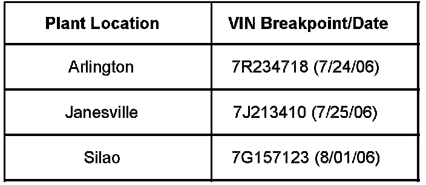
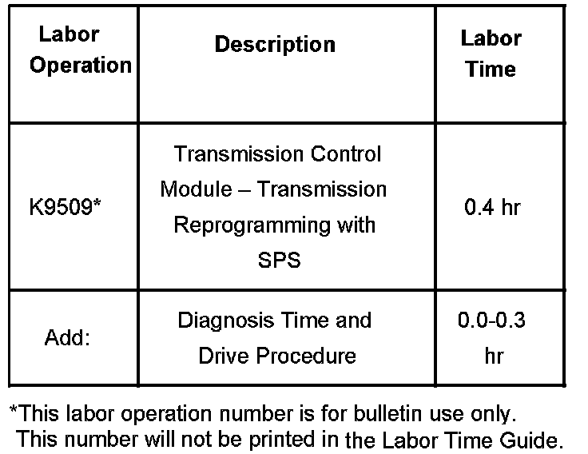

A/T Controls - Hesitation/Sag/Busy Shifting/Stalling
Bulletin No.: 06-07-30-019ADate: January 04, 2007
TECHNICAL
Subject:
6L80 Transmission Hesitation, Sag or Lack of Engine Response, Busy Transmission Shifting with Cruise Control Engaged, Engine Stalls on Initial Cold Start-up (Reprogram TCM)
Models:
2007 Cadillac Escalade, Escalade ESV, Escalade EXT
2007 GMC Yukon Denali, Yukon Denali XL
with 6L80 Automatic Transmission (RPO MYC)
Supercede:
This bulletin is being revised to update the correction information. Please discard Corporate Bulletin Number 06-07-30-019 (Section 07 - Transmission/Transaxle).

Built Prior to the VIN Breakpoints shown.
Condition
Some customers may comment on the following conditions:
A hesitation, sag or lack of engine response while accelerating. This typically occurs after backing off the throttle then shortly stepping back in to a heavy or wide open throttle position. This condition may occur at any speed, but is most likely to occur after accelerating to 48 to 80 km/h (30 to 50 mph), backing off the throttle then stepping back in. A 1.5 to 2.5 second delay may occur before the vehicle resumes acceleration.
Frequent transmission shift cycling occurring on slight to moderate grades when in cruise control at vehicle speeds from 64 to 121 km/h (40 to 75 mph). The customer comment may include "too much vehicle speed variation from the desired cruise control speed setting" when the shift cycling is evident.
On the initial cold start-up when ambient temperatures are below -22°C (-8°F) and an engine block heater is not used, the engine starts and may immediately stall. The engine will typically restart immediately and operate normally.
Correction
A revised transmission calibration has been developed to address these issues. Reprogram the transmission control module (TCM) with an updated software calibration. This new service calibration will be released with TIS satellite data update version 8.0 or later, available August 14, 2006. As always, make sure your Tech 2(R) is updated with the latest software version.
After reprogramming the TCM, Service Fast Learn Adapts must be performed using the Tech 2(R). Check and clear all DTCs that may have set as a result of the programming process.
Warranty Information

For vehicles repaired under warranty, use the table.

Disclaimer